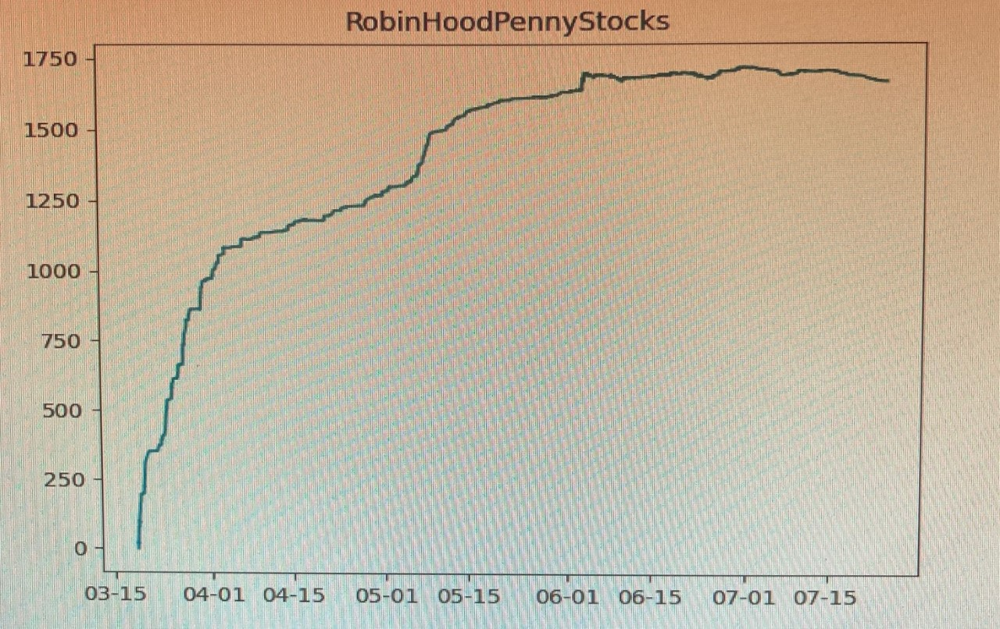

An open source project to scrape and test Discourse-Based Trading Advice.
"Buy All" policy for the r/RobinHoodPennyStocks forum (month long hold). Measured in %change from start of pandemic. n = 4800.
-r/Pennystocks: 6138 tickers With financial data since 07/01/2020
-r/RobinHoodPennyStocks: 4800 tickers with financial data since 03/19/2020
-r/Stocks: 18669 tickers with financial data since 07/31/2017
-r/Daytrading: 1378 tickers with financial data since 02/19/2017
-r/StockMarket: 1775 tickers with financial data since 03/29/2019
-r/Robinhood: 1279 tickers with financial data since 03/09/2020
-r/Investing: 10008 tickers with financial data since 01/01/2018
TOTAL: 44047 posts scraped with accompanying interday and intraday data
CONCLUSIONS: Sizable returns at start of pandemic across all forums. Then similar returns to market once volatility dies down.